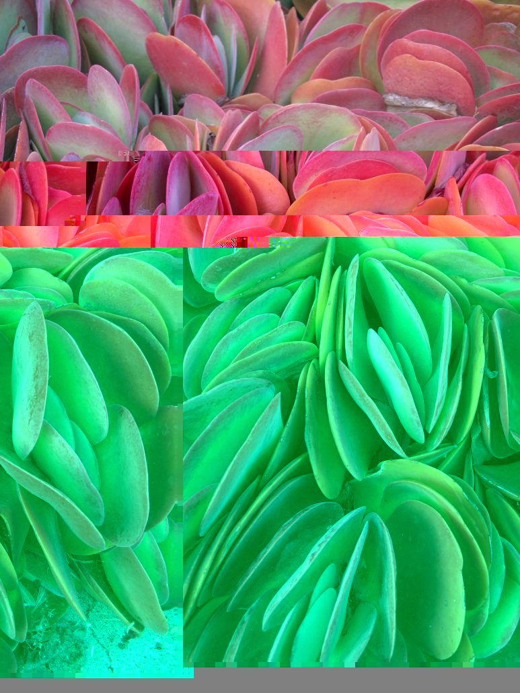

Glitch Art



This glitch art project explores distortion, digital error, and abstraction. By manipulating images through software and intentional corruption, I created visuals that reflect the unpredictable nature of digital media.
Tools used: (add your tools here)
Concept: Explain your idea, process, and inspiration here.